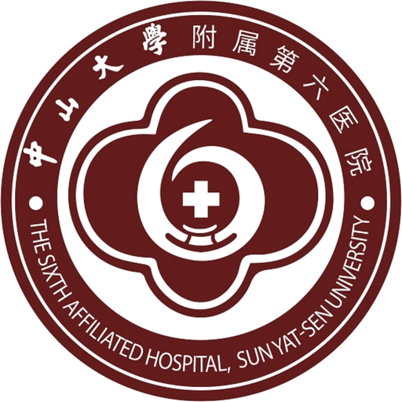
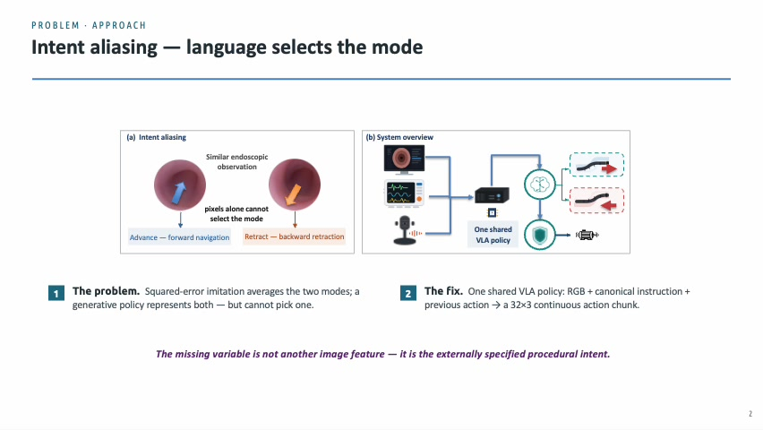
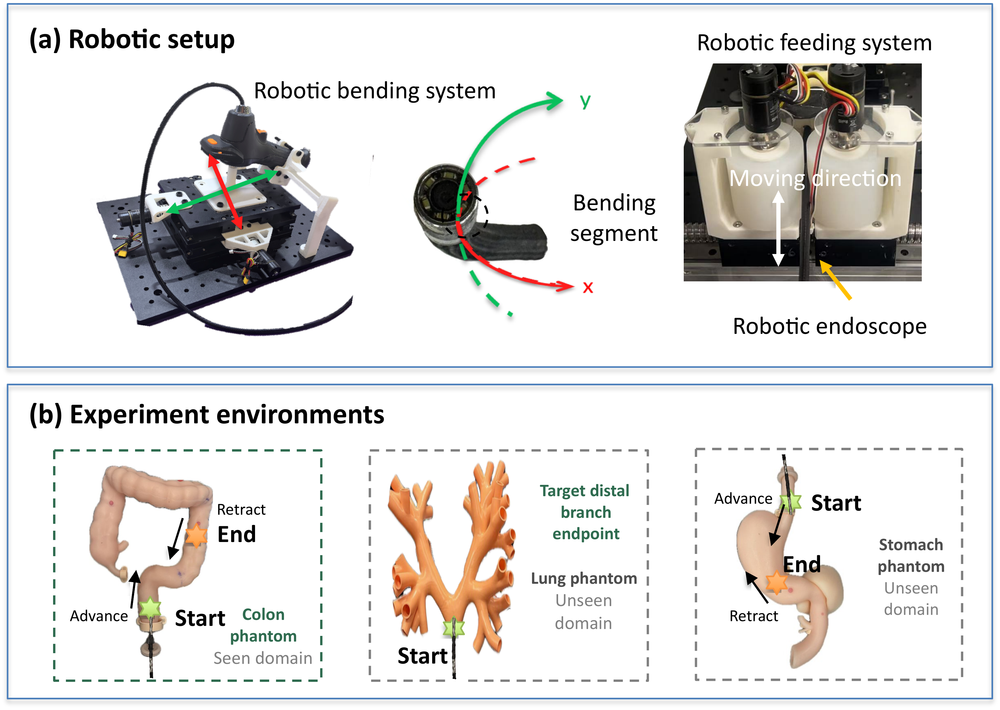
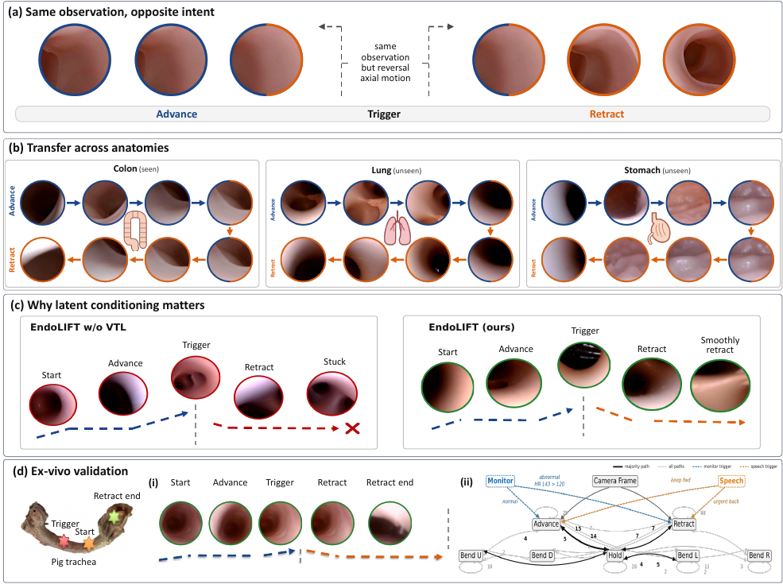

Problem formulation
Intent aliasing describes opposing actions under nearly identical observations.
Language-conditioned control · Robotic endoscopy
The image describes the anatomy. Language specifies the direction.


arXiv 2026
Intent aliasing
Endoscopy is bidirectional: the instrument advances to reach the anatomy and later withdraws for inspection. A physiological alert or verified voice instruction may request an earlier reversal, before the visual scene has changed.
Pixels alone cannot identify which procedural phase is active. EndoLIFT supplies the missing variable through language and uses one shared policy for forward navigation and urgent retraction.
Intent aliasing describes opposing actions under nearly identical observations.
Canonical instructions select the active axial mode.
A latent-conditioned flow expert generates continuous action chunks.
Architecture
A PaliGemma 2 backbone encodes the image and instruction. The previous action, visual-language prefix, flow time, and a 32-dimensional variational trajectory latent condition an eight-block Transformer action expert.
The expert generates a 32-step action chunk for longitudinal motion, up–down bending, and left–right bending. During deployment, a change in instruction invalidates the active chunk and immediately triggers replanning.

Full presentation
The complete presentation covers intent aliasing, language conditioning, latent rectified flow, phantom transfer, and ex-vivo evaluation.
Controlled evaluation
Same-observation instruction swaps show that language changes the axial mode independently of latent conditioning. Relative to the matched model without the trajectory latent, EndoLIFT improves direction accuracy by 11.1 points and reduces wrong-direction advance by 83%.
Across 44 held-out language variants, intent-following accuracy is 82.8%. Closed-loop evaluation improves success by 30 points in the seen colon phantom and unseen lung and stomach phantoms, followed by 10 successful ex-vivo porcine-trachea trials.

Publication
Preprint, 2026.
@article{ng2026endolift,
title={EndoLIFT: Language-Disambiguated
Latent-Conditioned Rectified Flow for
Bidirectional Endoscopic Control},
journal={arXiv preprint arXiv:2608.20478},
year={2026}
}